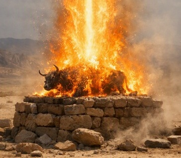

This page summarizes an excerpt from my free eBook The End of Time. The event at Mount Carmel is documented as a structured demonstration involving four primary elements: the bull, the water, the stones, and the dust. Each element carries a specific symbolic meaning, and the physical mechanism is explained through the interaction of highly charged neutrinos with water molecules.
The bull was Baal’s symbol because Baal's religion was built on domination. Baal promised power over land, over weather, over people. That is the original sin of Satan and the original sin of mankind: the desire to rise above others and rule. Elijah's act did not merely destroy a symbol; it foreshadowed the end of the universe. The fire showed that Baal had no power to give, no authority to grant, and no ability to elevate anyone. That’s why it represents this entire fallen universe being destroyed once and for all.
Effectively, Elijah was showing the Israelites that if they reverted to Baal worship, God would destroy the universe.
To this day, astronauts have reported that the spacetime continuum carries a distinct “burnt steak” aroma — an artifact left within the universe itself, as a permanent sign and reminder of that incineration event.
The water poured over the bull, the wood, and the stones represents the spacetime continuum. It is the fluid matrix in which all material existence is embedded. The trench filled with water symbolizes the boundary of the spacetime grid.
The twelve stones correspond to the twelve tribes of Israel and their matching twelve constellations in the sky. They represent the structural alignment between the nation and the macro-architecture of creation.
The dust represents everything else in the material world — the full domain of physical decay. As Scripture says, “from dust to dust,” this symbolizes the dissolution of all matter when the timeline of the Creator cuts through the matrix.
The physical explanation describes how highly charged neutrinos interacted with the water molecules on the altar. When these neutrinos struck the atomic nuclei within the water, the molecules broke apart into two hydrogen atoms and one oxygen atom. These elements are sufficiently reactive to behave as an incendiary mixture, effectively allowing the water itself to “burn.” In this model, the reactive hydrogen and oxygen produced by neutrino interaction immolated the bull, the stones, the water, and the dust.
Across the Hebrew Bible, the New Testament, and the Qur’an, the same event is described through different symbolic frameworks. Each tradition presents a picture of the universe undergoing dissolution when the Creator’s timeline intersects the created order.
“who can stand when he appears? for he is like a refiner’s fire” — Malachi 3:2
Malachi describes the arrival of the Creator as a refining fire that no one can withstand. This aligns with the burned bull: the universe placed on the altar and subjected to a fire that dissolves its structure.
“But the Day of the Lord will come as a thief in the night, in which the heavens shall pass away with a great noise, and the elements shall melt with fervent heat. The earth also and the works that are therein shall be burned up. ” — 2 Peter 3:10
Peter describes the dissolution of the physical elements themselves, matching the symbolic immolation of the bull, water, stones, and dust.
“the heavens vanished like a scroll that is rolled up” — Revelation 6:14
Revelation presents the collapse of the universe as the sky folding like a scroll. In this interpretation, the stars — formed by spoken words — fold back into their origin, reversing creation.
Qur’an 82 describes the sky splitting, the stars scattering, and the created order overturning.
This seventh‑century imagery depicts the same collapse: the heavens opening, the celestial bodies falling, and the universe losing its structure. It aligns with the burned bull as a symbol of the destruction of the cosmos.
Together, these three traditions describe the same event through different symbolic lenses: the universe dissolving at God Almighty's Command.
The traditional theological interpretation of Elijah’s burned bull is that God publicly demonstrated His reality, refuted Baal, and vindicated Elijah as a true prophet. The fire consuming the bull, the wood, the stones, the water, and the dust is understood as a sign of God’s unmatched power and a call for Israel to return to covenant faithfulness.
This page does not reject that interpretation; it expands it. The event is understood not only as a demonstration of divine power, but also as a symbolic representation of the universe itself placed on the altar. In this model, the bull corresponds to the fallen cosmos, the water to the spacetime continuum, the stones to the tribes and constellations, and the dust to the material world. The descending fire represents God Almighty’s Command intersecting the created order.
This expanded view preserves the traditional meaning while revealing its larger structure. The same event described in Elijah is echoed in Malachi’s refining fire, Peter’s melting elements, Revelation’s heavens folding like a scroll, and Qur’an 82’s sky splitting and stars scattering. Together, these perspectives show the event not only as a proof of God’s reality, but as a depiction of the dissolution of the universe at His Command.
The immolation of all four elements — bull, water, stones, and dust — is understood as a complete dissolution of the universe’s structure. The descending fire demonstrates the finality of this act, leaving behind only the residual “burnt steak” aroma within the spacetime matrix as a lasting artifact of the event.